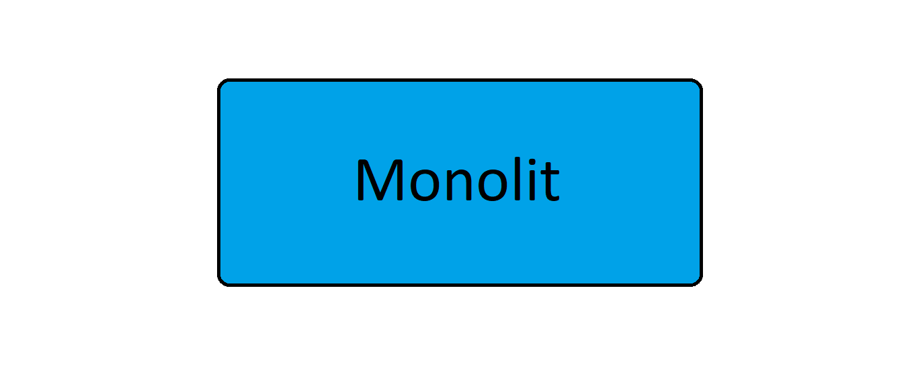
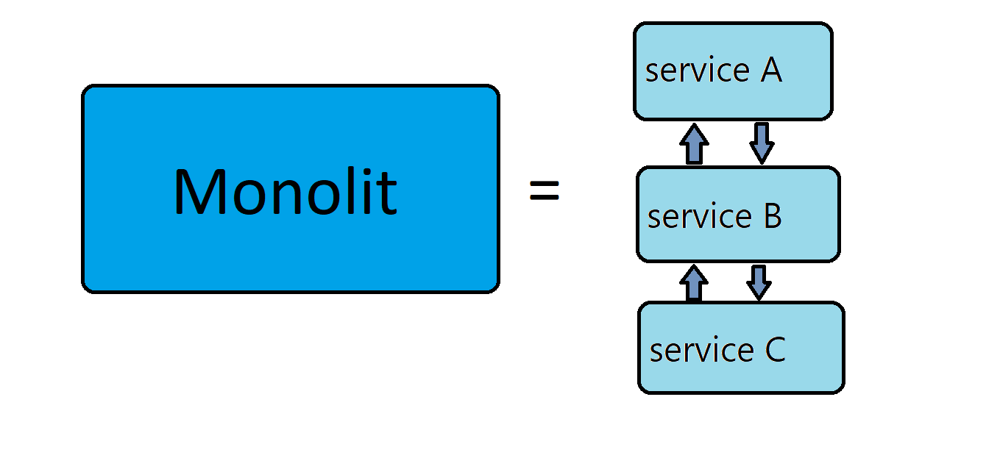

Microservices
what will you learn from this presentation
What is a microservice?
microservice benefits
disadvantages of microservice
summarizing


advantages
monolith decomposition
simpler tests
independent releases
independent degradation
independent scaling
introducing new ideas
managerial function
disadvantage
user request context
distribution
adding a new service